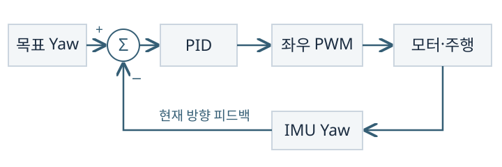

04.01
온디바이스 자세 인식과 주행 명령 연동
Raspberry Pi 5에서 YOLO Pose 기반으로 정상·위험·낙상 의심 상황을 판단하고 대상을 추적하는 시스템입니다. STM32에서는 전달받은 주행 명령을 모터 제어로 연결했습니다.
- 카메라 영상 입력
- Raspberry Pi 인식·추적
- STM32 주행 명령 수신
- 모터 구동
01 / OVERVIEW
라즈베리파이에서 영상 인식과 상황 판단을 수행하는 온디바이스 AI 순찰 로봇입니다. YOLO Pose로 사람의 자세를 분석해 위험 행동·낙상 의심 상황의 대상을 선정하고, STM32 보드의 주행 제어와 연동해 추적하도록 구현했습니다.
비전 AI 트래킹 로봇 시연
03 / SYSTEM
04 / IMPLEMENTATION
Raspberry Pi 5에서 YOLO Pose 기반으로 정상·위험·낙상 의심 상황을 판단하고 대상을 추적하는 시스템입니다. STM32에서는 전달받은 주행 명령을 모터 제어로 연결했습니다.
목표 방향과 IMU로 측정한 현재 Yaw의 차이를 이용해 좌우 모터 PWM을 보정했습니다. 전진·후진에 맞춰 보정 부호를 구분하고 적분 누적과 모터 출력에 상하한을 적용했습니다.

학습 라벨 형식을 통합하고 YOLO Pose 모델 학습·추론과 양자화를 수행했습니다. 원본 모델과 INT8 모델의 용량·추론 성능을 비교했습니다.
| 항목 | 원본 모델 | INT8 모델 |
|---|---|---|
| 모델 용량 | 6.5MB | 1.7MB 약 74% 감소 |
| 추론 성능 | 8.5FPS | 12.4FPS 약 46% 증가 |
05 / PROBLEM SOLVING